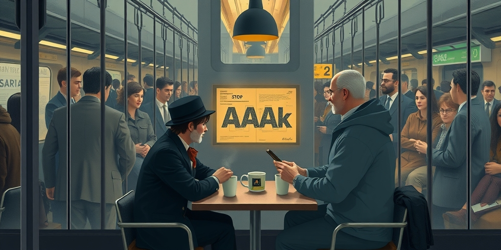
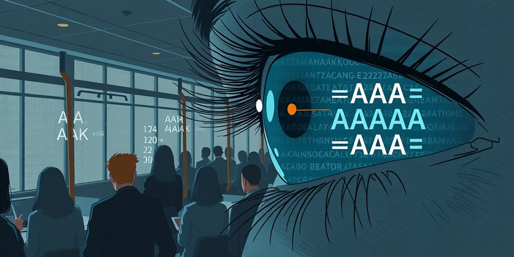

小汪老师的成长洞察 · 属于你的成长专栏
人类每次撞上通信带宽的瓶颈，都会发明一种压缩语言。电报员删掉所有虚词，速记员把音节扭成曲线。2024年，AI工程师创造了AAAk——一种专为大模型设计的速记方言。但这一轮，规则彻底变了：这种语言不是写给人读的。

一个1850年的电报员和一个2025年的AI工程师坐在同一张咖啡桌前。电报员掏出那张著名的黄色纸条，上面写着：ARRIVE TUESDAY STOP BRING CONTRACT STOP WEATHER BAD STOP。工程师看了一眼，笑了。他从口袋里抽出一张打印纸，上面是一串人类无法直视的符号：&proj{db=pg;reason=hi_write_qps}。
工程师说，我省token，因为上下文窗口太贵了。电报员说，我省字，因为电报按字收费，每个字都是钱。他们碰了一下咖啡杯。
相隔一百七十五年，两个人干的是同一件事：在带宽受限的通道里，用最少的符号塞进最多的信息。但工程师手里的那张纸，电报员读不懂。不是因为他老了，是因为这种压缩根本不打算让人读懂。
AAAk看起来像AI时代的新发明，但它属于一个古老的传统。人类每次遇到通信瓶颈，都会催生一种压缩语言。19世纪的电报体删光了冠词、介词和修饰语，只留信息骨架。收报人能无损还原——“天气不好，速归”。
20世纪的Gregg速记把书写效率推到物理极限。使用者用曲线和长度变化代表音节，实时追上一分钟一百二十个词的语速。军事通信代码更极端，把“敌人从西北方向以营级规模推进”塞进三个音节，每个音节携带精确的战术信息。
JavaScript压缩器也是同一逻辑。它删掉所有空格、换行和长变量名，生成人类无法直视的代码，但解析器完美处理。这些系统有一个共同前提：压缩目标是人，或者至少人也在读。电报体要人能读，速记要人能回译，minification虽然交给机器执行，但人还需要debug。AAAk打破了这层约束。

AAAk全称无从考证，但它来自MemPalace项目，是一种专为AI智能体设计的无损速记方言。它本质上是极度截断、结构化和符号化的英语文本。它瞄准三个痛点：上下文窗口昂贵，传统摘要法丢关键推理链，冗余信息让LLM注意力涣散。
它的解决方案很直接——创造一种“电报式”压缩语言，在不丢失核心逻辑和关键实体的前提下，把文本体积极致压缩。但它做了一件历史上所有压缩系统都没做的事：完全放弃人类可读性。
不需要保留“看起来像句子”的结构，不需要语法完整，只需要保留“LLM能从中重建完整语义”的最少符号集。这就像从有损压缩切换到针对特定解码器的最大熵编码。AAAk是一种LLM-native的语义编码——不是压缩英文，是找到一种比英文更接近LLM内部表征结构的表达方式。
自然语言是一种极其冗余的编码。它塞满了为人类认知便利设计的特征：语境暗示、修辞、情感标记、叙事节奏。这些在LLM面前全是开销。LLM不需要读到第三段才被打动，它可以把信息直接映射到语义空间。
如果写给AI的最优语言完全不像人类语言，那会是什么样子？它可能介于自然语言和机器代码之间——不是JSON，不是YAML，而是一种全新的结构化符号。AAAk是这条路上的一个早期探索。
这条路走到尽头，人机语言会彻底分离。人类语言可能退化为一个中间层：人类说自然语言，压缩器转成AI格式，AI处理完，解压器再转回自然语言。就像今天的人类不会直接看汇编代码。编程语言从机器码一路走到Python，每往上一层人类离机器更远。AAAk是相反方向的箭头——为了效率，往下走，回到接近结构的层面。但这次往下走，不是回到机器码，而是走向一种介于语义和符号之间的原生AI语言。
写给你的话
如果“写给AI的语言”和“写给人的语言”正在分化为两套独立的系统，未来的人类是否需要一种全新的素养——不是读代码，而是读“压缩语义”？就像20世纪的人类需要学会计算机素养一样，21世纪的人类是否也需要AI语言素养？微软的LAM框架、Anthropic的MCP协议，还有直接把对话压缩成高维向量的研究，都在指向同一个方向。当AI之间也开始用这种格式通信，人类可能变成外挂。读完这篇文章，如果你开始怀疑自然语言的效率，那它就完成了任务。
小汪老师的成长洞察 · 属于你的成长专栏